항공무선통신사 (2007-10-28 기출문제)
1과목: 전파법규
1. 다음 중 항공기의 무선전화에 의한 조난호출시 송신순서로 옳은 것은?
- 조난 - 여기는 - 조난항공기국의 호출명칭 - 사용전파의 주파수
- 조난 - 여기는 - 조난항공기국의 호출명칭 - 조난장소의 위치
- 여기는 - 조난항공기국의 호출명칭 - 조난 - 사용전파의 주파수
- 여기는 - 조난항공기국의 호출명칭 - 조난 - 조난장소의 위치
(정답률: 64%)

2. 다음 중 전파의 효율적인 관리 및 진흥을 위한 사업과 정부로부터 무선국검사 등의 위탁 받은 업무를 수행하기 위하여 설립된 법인은?
- 전파진흥협회
- 한국전파진흥원
- 정보통신진흥협회
- 한국통신기술협회
(정답률: 84%)
3. 다음 중 항공기국이 무선전화통신에 의하여 무선방향지국에 대하여 방위측정용 부호를 송신하고자 하는 경우 송신순서로 옳은 것은?
- 자국의 호출부호 - 각10초간의 2선 - 자국의 호출부호
- 상대국의 호출부호 - 각10초간의 2선 - 자국의 호출부호
- 자국의 호출부호 - 각20초간의 2선 - 상대국의 호출부호
- 상대국의 호출부호 - 각20초간의 2선 - 자국의 호출부호
(정답률: 63%)
4. 다음 중 RR에서 규정하는 무선전화통신사 자격중에 해당하는 것은?
- 무선전화통신사 임시자격증
- 무선전화통신사 일반자격증
- 무선전화통신사 1급 자격증
- 무선전화통신사 2급 자격증
(정답률: 70%)
5. 다음 중 항공무선통신사가 종사할 수 있는 범위로 틀린 것은?
- 항공기에 시설하는 무선설비의 외부조정의 기술운용(무선전신 및 다중무선설비 제외)
- 항공운항관련 무선국의 공중선전력 100W 이하 무선설비의 통신운용(무선전신 제외)
- 레이더의 외부조정의 기술운용
- 제3급 아마추어무선기사(전화급)의 종사범위에 속하는 운용
(정답률: 61%)
6. 다음 중 혼신을 피하기 위하여 준수되어야 할 규정이 아닌 것은?
- 불필요한 방향으로의 복사를 최소화하여야 한다.
- 주파수 허용편차를 준수하여야 한다.
- 스프리어스 발사 최대 허용전력레벨을 준수하여야 한다.
- 송신국의 위치를 높은 곳에 두어야 한다.
(정답률: 74%)
7. 다음 중 전파법과 전파에 관한 국제조약과의 상관관계를 옳게 설명한 것은?
- 전파법이 국제조약에 우선한다.
- 전파에 관하여 조약에 따로 규약이 있는 때에는 전파법의 규정에 불구하고 국제조약에 의한다.
- 국내법과 국제조약은 동등하다.
- 국내에서는 전파법을 적용하고 국제적인 분쟁이 있을 때에는 국제조약에 의한다.
(정답률: 51%)
8. 다음 중 무선국 허가증의 기재사항이 아닌 것은?
- 공중선전력과 준공기한
- 전파의 전송방법
- 무선종사자의 자격과 정원
- 무선설비의 설치장소
(정답률: 35%)
9. 다음 중 우리나라에 분배된 국제부자열 시리즈가 아닌 것은?
- DSA - DTZ
- HLA - HLZ
- HMA - HMZ
- 6KA - 6NZ
(정답률: 68%)
10. 다음 중 공중선계가 충족하여야할 조건으로 옳지 않은 것은?
- 정합은 신호의 반사손실이 최소화 되도록 할 것
- 공중선이 이득이 높을 것
- 지향성은 복사되는 전력이 목표하는 방향을 벗어나지 아니하도록 안정적일 것
- 공중선주의 높이가 충분할 것
(정답률: 52%)
11. 다음 중 허가를 받지 아니하고 무선국을 개설하거나 이를 운용한 자에 대한 벌칙은?
- 1년 이하의 징역
- 3년 이하의 징역 또는 2,000만원 이하의 벌금
- 5년 이하의 징역 또는 3,000만원 이하의 벌금
- 10년 이하의 징역 또는 5,000만원 이하의 벌금
(정답률: 61%)
12. 다음 중 무선국의 개설조건으로 옳지 않은 것은?
- 시설자가 아닌 타인에게 그 무선설비를 제공하는 것일 것
- 개설목적, 통신사항 및 통신상대방의 선정이 법령에 위반되지 아니할 것
- 개설목적을 달성하는데 필요한 최소한의 주파수 및 공중선전력을 사용할 것
- 이미 개설되어 있는 다른 무선국의 운용에 지장을 주지 아니할 것
(정답률: 70%)
13. 정보통신부장관은 무선국의 허가유효기간을 원칙적으로 몇 년을 초과하지 아니하는 범위내에서 정하여야 하는가?(오류 신고가 접수된 문제입니다. 반드시 정답과 해설을 확인하시기 바랍니다.)
- 3년
- 1년
- 5년
- 10년
(정답률: 48%)
14. 다음 중 진폭변조, 단측파대의 전반송파를 나타나는 전파형식 표시기호는?
- A
- B
- H
- F
(정답률: 63%)
15. 다음 중 항공기의 정상운항에 관한 통신의 통보가 아닌 것은?
- 항공기의 운항계획 변경에 관한 통보
- 항공기의 예정외 착륙에 관한 통보
- 시급히 입수하여야 할 항공기 부품에 관한 통보
- 항공교통 관제에 관한 통보
(정답률: 61%)
16. 다음 중 최초로 정기검사를 받는 무선국의 정기검사 유효기간의 기산일은 언제부터인가?
- 준공검사필증을 교부받은 날
- 무선국허가증을 교부받은 날
- 준공검사필증을 교부받은 다음 날
- 무선국허가증을 교부받은 다음 날
(정답률: 56%)
17. 다음 중 MF(핵터미터파) 전파의 주파수 범위로 옳은 것은?
- 300[kHz] 초과 3,000[kHz] 이하
- 3[MHz] 초과 30[MHz] 이하
- 30[MHz] 초과 300[MHz] 이하
- 300[MHz] 초과 3,000[MHz] 이하
(정답률: 68%)
18. 다음 중 청문대상이 아닌 것은?
- 무선국 개설허가의 취소
- 형식검정의 합격 취소
- 무선국검사 합격 취소
- 무선종사자 기술자격의 취소
(정답률: 37%)
19. 회전익항공기 및 초경량비행장치를 제외한 의무항공기국의 정기검사 유효기간은?
- 6개월
- 1년
- 2년
- 3년
(정답률: 51%)
20. 다음 중 108MHz 내지 118MHz의 주파수의 전파를 전방향에 발사하는 회전식 무선표지업무를 행하는 설비는?
- DMZ
- VOR
- 마아커비콘
- 글라이드패스
(정답률: 79%)
2과목: 기초전파공학
21. DME의 Transponder는 대략 몇 대의 항공기에 대하여 동시에 응답할 수 있는가?
- 약 100대
- 약 200대
- 약 500대
- 무한대
(정답률: 47%)
22. 급전선의 필요조건으로 잘못된 것은?
- 전송효율이 좋을 것
- 급전선의 파동임피던스가 클 것
- 유동방해를 주거나 받지 않을 것
- 송신용의 경우 절연내력이 클 것
(정답률: 41%)
23. SSR 및 ATC 트랜스폰더에 관한 설명 중 틀린 것은?
- SSR에서 발사하는 질문 펄스를 모드 펄스(modu pulse)라 한다.
- SSR에서는 1,090[MHz]의 질문 전파를 발사한다.
- ATC 트랜스폰더에서의 응답 펄스를 코드 펄스(code pluse)라 한다.
- ATC 트랜스폰더는 자기로 할당된 응답코드 및 고도를 응답한다.
(정답률: 41%)
24. ADF의 180° 모호성(Ambiguity)을 제거하기 위하여 Loop 안테나 외에 추가로 설치하는 것은?
- Senstive 안테나
- Band Selector
- Scanning 안테나
- BFO Switch
(정답률: 41%)
25. 다음 중 항공로용 초단파(VHF) Marker Beacons 과 관련 없는 것은?
- 주파수는 75[MHz] ±0.0⑤% 이어야 한다.
- 무선마커비콘은 95% 또는 100%이상 변조된 연속 반송파를 방사한다.
- 변조 톤의 주파수는 3,000 ±75[Hz] 이여야 한다.
- 전파의 방사는 반드시 원 편파만 사용하여야 한다.
(정답률: 44%)
26. 수신기의 성능 중에서, 어느 정도 약한 전파에서 수신할 수 있는 능력이 있는지를 나타내는 것은?
- 안정도
- 선택도
- 감도
- 충실도
(정답률: 45%)
27. ILS Middle Marker Lamp Color 는 무엇인가?
- Blue
- White
- Amber
- Purple
(정답률: 34%)
28. DC 12[V], 소비전력 60[W]의 송신기 전원공급기가 고장나서 임시로 밧데리를 연결하여 동작시키려고 한다. 밧데리의 용량은 6[V], 2[A] 라면 정상 동작되는 연결 방법은 어느 것인가?
- 밧데리 2개를 직렬 연결하여 공급한다.
- 밧데리 2개를 병렬 연결하여 공급한다.
- 밧데리 2개를 직렬 연결한 것 2조를 병렬 연결하여 공급한다.
- 밧데리 2개를 직렬 연결한 것 3조를 병렬 연결하여 공급한다.
(정답률: 27%)
29. 송신기에서 발사되는 공중선 전력을 측정할 수 있는 계기는?
- Watt Meter
- Frequency Counter
- Generator
- Oscilloscope
(정답률: 43%)
30. 다음 중 λ/4 수직접지안테나의 길이가 25m일 때 적절하게 사용할 수 있는 주파수는 어느 것인가?
- 12[MHz]
- 6[MHz]
- 3[MHz]
- 1[MHz]
(정답률: 25%)
31. 다음 항법보안시설 중 주로 계기진입 경로상과 항로상에 설치되어 선형성의 지향성 전파를 상공으로 발사하여 항공기 위치식별에 도움을 주는 시설은?
- Fan Marker
- Compass Locator
- Z Marker
- DME
(정답률: 19%)
32. VOR의 국식별(Identification)에 대한 설명 중 맞는 것은?
- 매 30초마다 3문자의 국제 Morse code로 국식별 신호를 3회 이상 발사한다.
- 반드시 음성으로 된 식별음을 발사한다.
- 매 1분마다 3문자의 Morse code를 송신한다.
- 매 5분마다 3문자의 Morse code를 송신한다.
(정답률: 44%)
33. 펄스변조의 종류 중 신호레벨에 따라 펄스의 위상을 변화시키는 변조방식은?
- 펄스진폭변조
- 펄스폭변조
- 펄스주파수변조
- 펄스위상변조
(정답률: 45%)
34. 다음 중 파장이 가장 짧은 것은?
- LF
- MF
- HF
- VHF
(정답률: 46%)
35. 항공기에 사용하는 VHF 통신장비의 설명 중 틀린 것은?
- 사용 주파수 대역은 118,000∼135,975[MHz]를 사용한다.
- 채널간격은 25[kHz]로 720개의 채널이 있다.
- 변조방식은 잡음이 없는 FM(Frequency Modulation)을 사용한다.
- 교신가능거리는 근거리 통신용이다.
(정답률: 18%)
36. 주파수 변조방식의 송신기에서 FM 편이 값이 ±10[kHz]이고, 변조신호주파수는 5[kHz]일 때 송신기의 점유주파수대폭은 얼마인가?
- 10[kHz]
- 20[kHz]
- 30[kHz]
- 40[kHz]
(정답률: 17%)
37. 내압이 낮은 다이오드를 높은 전압에서 사용할 때 각 다이오드의 내압을 합한 크기가 사용전압보다 크게 얻고자 할 때 사용되는 접속방법은?
- 직렬접속
- 병렬접속
- 직·병렬접속
- 평행접속
(정답률: 45%)
38. 직류(DC)를 교류(AC)로 변환시키는 전원공급장치는?
- Auxiliary Power Unit
- Converter
- Inverter
- Bus Power control Unit
(정답률: 47%)
39. 태양의 폭발에 의해 방출된 자외선이 E층의 전자밀도를 증가시켜 통신을 불가능하게 만드는 현상은?
- 룩셈부르크 현상(Luxemburg effect)
- 자기폭풍(Magnetic storm)
- 델린저 현상(Dellinger effect)
- 페이딩 현상(Fadihg effect)
(정답률: 42%)
40. 전자유도에 의한 유도기전력의 크기를 나타내는 법칙은 어느 것인가?
- 페러데이의 법칙
- 렌쯔의 법칙
- 오른 나사의 법칙
- 비오사바르의 법칙
(정답률: 31%)
3과목: 통신보안
41. 상대의 통신망에 개입, 상대를 오인케 하여 비밀을 탐지하는 수단은?
- 기만통신
- 방해통신
- 교신분석
- 암호분석
(정답률: 43%)
42. 통신보안상의 통신내용 분석이라 무엇인가?
- 암호기술을 분석하는 것
- 통신제원과 통신특성만을 분석하는 것
- 통신문을 종합 분석하여 중요한 정보를 알아 내는 것
- 통신문 중 중요내용의 유무를 확인하는 것
(정답률: 50%)
43. 무선통신망 운용중 통신보안에 위반하였을 때 적용 받는 법은?
- 전기통신법
- 전파법
- 국가보안법
- 정보통신공사업법
(정답률: 33%)
44. 송신보안의 수단으로 적절하지 아니한 것은?
- 통신제원의 수시 변경
- 통신소 내부투시방지
- 통신시간 및 통신량 조절
- 통신운용 절차를 엄수
(정답률: 27%)
45. 무선전화가 통신보안에 취약한 이유는?
- 통화 시 상대방에게 무선전화임을 통보하여야 하기 때문이다.
- 도청 시 통화자에게 인지 당할 염려가 없다.
- 무선전화는 사용하기에 불편하기 때문이다.
- 같은 전파형식의 수신장치로 쉽게 도청할 수 있다.
(정답률: 46%)
46. 통신 도청을 방지하는 대책으로 옳은 것은?
- 통신 제원을 장기간 유지한다.
- 통신사 개인특성을 노출한다.
- 보안장비를 설치 운용한다.
- 불필요한 전파를 계속 발사한다.
(정답률: 49%)
47. 무선통신에서 통신보안이 필요한 요인으로 적절하지 않은 것은?
- 무선통신의 이용이 날로 증가되고 있기 때문이다.
- 무선통신이 도청하기 쉽기 때문이다.
- 통신이 풍부한 정보의 원천이 되기 때문이다.
- 이용하는 주파수가 높아지기 때문이다.
(정답률: 39%)
48. 통신보안이 가장 취약한 통신망은?
- 무선통신망
- 유선통신망
- 보안장비가 설치된 팩시밀리 통신망
- 보안장비가 설치된 텔렉스 통신망
(정답률: 45%)
49. 통신보안책임자의 의무가 아닌 것은?
- 통신시설의 통신내용 감청
- 통신문의 사전보안성 검토
- 통신보안 위규사항 발생 사전 제거
- 불요불급한 통신사용 억제
(정답률: 49%)
50. 무선통신운용에 있어 기본적인 통신제원에 속하지 않은 것은?
- 교신시간
- 호출부호
- 주파수
- 통신문 내용
(정답률: 33%)
4과목: 영어
51. “그는 너무 엉뚱해서 계단을 오를 수 없다”를 영작한 문장으로 가장 적절한 것은?
- He is so fat that walk up the stairs.
- He is too fat that he can walk up the stairs.
- He is too fat to walk up the stairs.
- He is too fat for he can't walk up the stairs.
(정답률: 58%)
52. "반송주파수 2,182kHz는 무선전화용 국제조난 주파수이다.“에서 밑줄친 부분에 대한 영문표현으로 적합한 것은?
- An international distress frequency for radiotelegraphy
- An international emergency frequency for radiotelegraphy
- An international emergency frequency for radiotelephony
- An international distress frequency for radiotelephony
(정답률: 50%)
53. 항공통신의 송신내용 중에 “I READ BACK"이란 용어의 뜻은?
- Wait and I will call you
- Annual the previously transmitted clearance
- Permisson for proposed action granted
- Repeat my message back to me
(정답률: 60%)
54. 다음 중 그 의미가 틀린 것은?
- Dent - 눌린 자국
- fuselage bottom - 날개 밑면
- Precaution - 경계
- Discrepancy - 고장
(정답률: 54%)
55. 문맥상 다음 문장의 밑줄친 부분과 같은 뜻의 단어는?
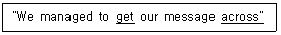
- fulfill
- nulify
- communicate
- understand
(정답률: 43%)
56. ICAO 규정에서 정의한 다음의 용어는 무엇을 나타내는가?
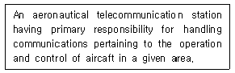
- Air control radio station'
- Ground control radio station
- Land station
- Air-ground control radio station
(정답률: 45%)
57. 밑줄 친 곳에 들어갈 말은?
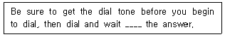
- in
- on
- for
- up
(정답률: 56%)
58. 다음 내용이 설명하는 용어는?
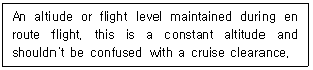
- Navigation altiude
- En route altitude
- Cruising altitude
- Indicated altitude
(정답률: 45%)
59. 다음 문장의 괄호 속에 들어가는 가장 알맞은 것은?
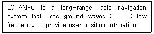
- transmitted at
- transmites at
- transmiting on
- transmite on
(정답률: 43%)
60. 다음 중 괄호 안에 가장 적당한 것은?
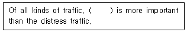
- non
- none
- nobody
- nothing
(정답률: 55%)
61. 다음 빈칸에 가장 적합한 것은?
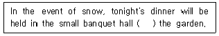
- in spite of
- instead of
- because of
- despite of
(정답률: 50%)
62. 다음 괄호 속에 들어갈 가장 적합한 것은?
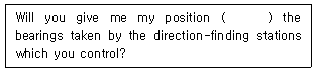
- according for
- according in
- according of
- accrding to
(정답률: 48%)
63. Choose the wrong ICAO phonetic alphabet.
- D : Delta
- I : indo
- Q : Quebec
- S : Sierra
(정답률: 61%)
64. 다음 괄호 속에 들어가는 가장 적합한 것을 고르시오.
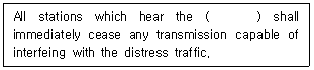
- service call
- emergency call
- distress call
- stations call
(정답률: 49%)
65. 다음 괄호 속에 들어갈 가장 적합한 말을 고르시오.
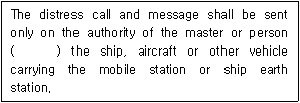
- responsible to
- responsible for
- responsible on
- responsible of
(정답률: 57%)
66. 송신 중에 쓰이는 말로 “ The message will be repeated" 와 같은 내용의 용어를 고르시오.
- Speak again
- I say again
- Repeat last transmission
- Requset last transmissoin again
(정답률: 49%)
67. 다음 문장을 나타내는 통신용어는?
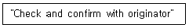
- SAY AGAIN
- CLEARED
- VERIFY
- READY
(정답률: 48%)
68. 밑줄 친 곳에 적당한 말은?
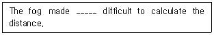
- that
- this
- it
- such
(정답률: 49%)
69. 다음 문장의 괄호에 가장 적합한 용어는?
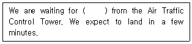
- CLEARANCE
- REQUEST
- VERIFICATON
- READBACK
(정답률: 53%)
70. 전화상으로 “ 추후 다시 전화 드리겠습니다” 라고 말할 때 ( ) 안에 알맞은 말은?
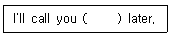
- sonn
- some
- back
- after
(정답률: 59%)
무선전화로 조난호출을 할 때는 먼저 "조난"이라는 단어로 시작하여 상황을 알리고, 그 다음으로 "여기는"이라고 말한 후에, 조난항공기국의 호출명칭을 말하고, 마지막으로 사용하는 전파의 주파수를 말해야 합니다. 이러한 순서는 조난호출을 받는 측에서 신속하게 대응할 수 있도록 하기 위함입니다.